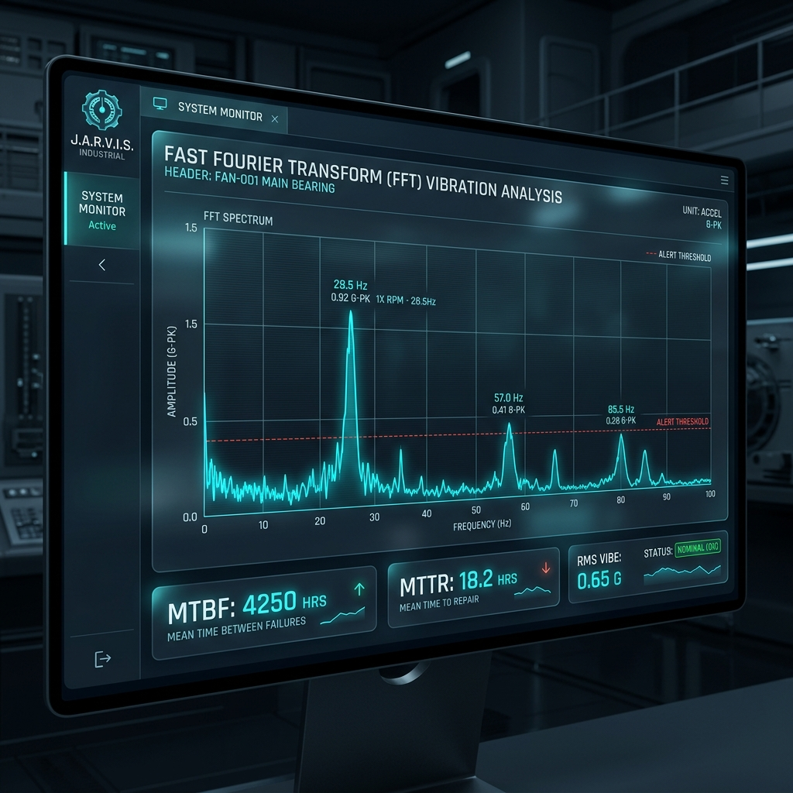
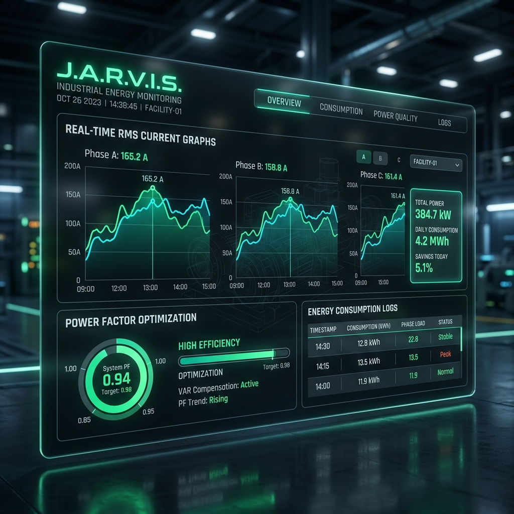

POC_DATA_001: DASHBOARD PERFORMANCE
Evidência técnica de monitoramento de ativos críticos em tempo real.
ANÁLISE VIBRACIONAL (FFT)

Análise Espectral de Vibração: O gráfico acima demonstra a decomposição de frequência em tempo real. Picos em harmônicos específicos permitem ao JARVIS identificar falhas de rolamento semanas antes da quebra mecânica catastrófica.
EFICIÊNCIA ENERGÉTICA (RMS)

Análise de Corrente e Potência: Monitoramento de fluxo RMS nas três fases do ativo. A correlação entre o fator de potência e a demanda térmica permitiu uma redução otimizada de 5.1% no consumo diário através de ajustes automáticos de setpoint.